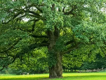
Chênewiki-fr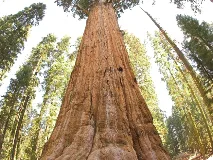
Séquoia géantwiki-fr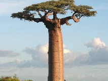
Baobabwiki-fr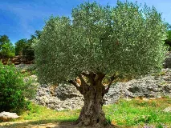
Olivierwiki-fr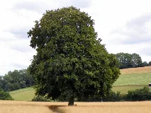
Hêtrewiki-fr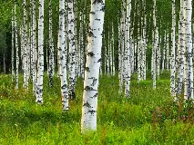
Bouleauwiki-fr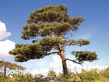
Pin sylvestrewiki-fr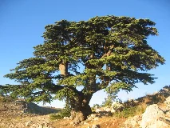
Cèdre du Libanwiki-fr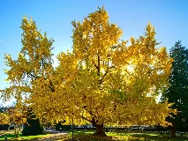
Ginkgo bilobawiki-fr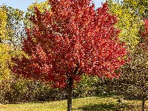
Érablewiki-en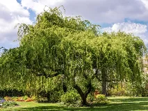
Saule pleureurwiki-fr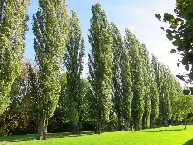
Peuplierwiki-fr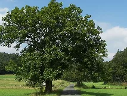
Frênewiki-fr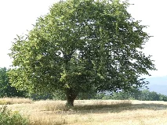
Tilleulwiki-fr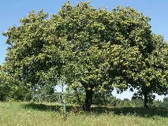
Châtaignierwiki-fr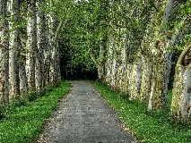
Platanewiki-fr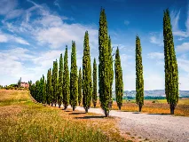
Cyprèswiki-fr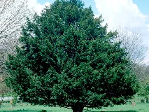
If communwiki-fr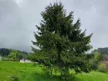
Épicéa communwiki-fr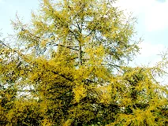
Mélèzewiki-fr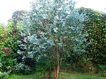
Eucalyptuswiki-fr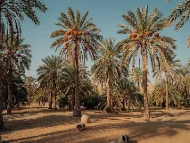
Palmier dattierwiki-fr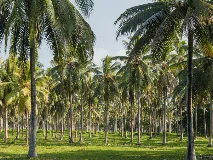
Cocotierwiki-fr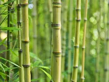
Bambouwiki-fr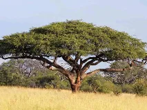
Acaciawiki-fr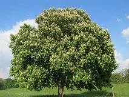
Marronnierwiki-fr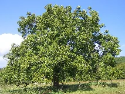
Noyerwiki-fr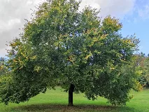
Ormewiki-fr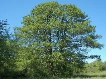
Aulnewiki-fr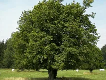
Charme communwiki-fr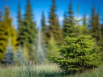
Sapinwiki-fr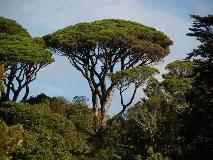
Pin parasolwiki-fr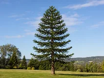
Araucariawiki-fr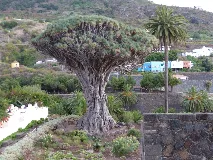
Dragonnierwiki-fr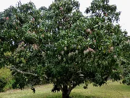
Manguierwiki-fr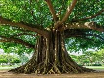
Figuier des banianswiki-fr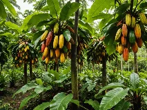
Cacaoyerwiki-fr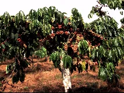
Caféierwiki-fr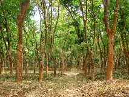
Hévéawiki-fr